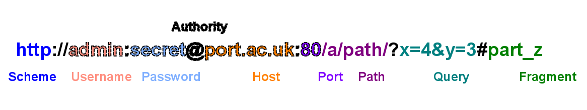

29/9/16
Unix virtual machine
Useful unix commands
- ls = list files
- mkdir = make directory
- cd = change current directory
- rm = remove file
- pwd = print current directory
- cat = display file
- touch = create / update file
- mv = move file
- cp = copy file
- nano = text editor
- http-server = launch web server
6/10/16
Social Engineering Techniques
- Phishing, impersonation
- Physical access (tailgating)
- Shoulder surfing
- Dumpster articleing, stealing important information
- Fake software, trojans
- Quid pro quo, baiting, pretexting
18/10/16
Reviewing Literature
Lit review identifies:
- Previous research
- Major concepts
- Strengths, weaknesses, conflicts and research gaps
- Different approaches to the topic
- Potential future work
How to select good sources:
- Is it directly relevant
- Is it authoritative
- Widely cited
- Does the evidence support its conclusions
- Do other papers support / contradict
27/10/16
Academic Writing
Writing academically:
- Evidence based
- Evaluative
- Thoughtful
- Structured
- Logical
- Neutral
- Objective not subjective
Avoid:
- Waffle
- Unqualified statements
- Streams of consciousness
- Informality
- Contractions
APA v6, journal article:
Cipolat-Gotet, C. C., Cecchinato, A. A., De Marchi, M. M., & Bittante, G. G. (2013). Factors affecting variation of different measures of cheese yield and milk nutrient recovery from an inarticleidual model cheese-manufacturing process. Journal Of Dairy Science, 96(12), 7952-7965. doi:10.3168/jds.2012-6516
Quotation in text:
“similarity to the consumer.” (Taylor et al. (2011, p.61).
10/11/16
Markup Introduction
HTML - HyperText Markup Language
CSS - Cascading Style Sheets
Basic HTML elements:
- <!doctype html> = Specifies that the document is HTML document, the doctype also specifies that this is HTML5 document.
- <p> = A paragraph of Text.
- <h1> = A text heading, these start at h1 going down to h6, the h1 represents the highest level and most important heading within the page.
- <head> = A section that provides metadata about the page such as title, links (CSS, scripts).
- <title> = Defines page title which is shown on the browser tab, this title should be short and define exactly what the page is about.
- <link> = Creates a link with an external resource such as style sheets and favicons.
- <a> = Creates a hyperlink to another page via a URL, which can be absolute or relative for links within the current website.
- <ul> = Creates an unordered list of items, with the default showing bullet points for each list item within.
- <ol> = Creates an ordered list of items, with the default showing ascending numbers for each list item.
- <li> = Creates a list item which should be placed within a ul or ol element, list content should be placed within the li tags.
Useful resources:
17/11/16
Types of Markup
Markup: Added to text to help convey its meaning
Stylesheet: Tells browser how to present markup
Procedural Markup
- What to do
- How it looks
- Example code:
<b>, <br>, <div>
Descriptive Markup
- What it means
- Not how it looks or what to do
- Example code:
<main>, <section>, <aside>
Using descriptive markup is preferable as it is:
- Easier to understand
- Easier to maintain
- Creates smaller five sizes
24/11/16
Addressing on the Web
Anatomy of URL
A DNS is a record of domains and their IP adresses
Ports
- Over 65,000
- Under 1024 are used for specific purposes
- HTTP = 80
- HTTPS = 443
- SSH = 22
- FTP = 21
Query strings: Pass strings via URL allowing server scripts to interpret them, e.g http://www.example.com/index.html?name=matt&food=pie
HTTP: Defines how messages are formatted and transmitted and how browsers and servers respond to these commands. Entering a HTTP url means you are sending a HTTP GET request
Fragments: Loads page and looks for element with passed fragment, e.g index.html#cake
<a href="index.html#about">About section link</a>- About section link
Absolute URL’s: Link directly to the html page
<a href="http://port.ac.uk">Portsmouth Uni Link</a>- Portsmouth Uni Link
Relative URL’s: Links to the html page relative current page
<a href="/otherwork.html">Other Work Link</a>- Other Work Link
Target attribute: Target ="_blank", open link in new window
<a target ="_blank" href="/otherwork.html">Other Work Link</a>- Other Work Link
1/12/16
Multimedia in HTML
<img> = Image element
- href = Image source, can be absolute or relative
- alt = Alternative text, always use
- title = Tooltip on mouseover
- MDN Img Element
<figure> = Specify self-contained content, such as images.
<figcaption> = Caption associated with figure, such as a description of the figure content.
<picture> = Specifies container for multiple source elements.
<source> = Specifies media element for use with picture, audio and video elements.
Solution for specifying multiple image sources based on screen width.
- <picture>
- <source media="(min-width: 700px)" srcset="img/abstractIso1.png">
- <source media="(min-width: 600px)" srcset="img/abstractIso2.png">
- </picture>
Solution for video with autoplay, source, as well as alternative if video fails to load.
- <video autoplay>
- <source> src="i/testcard.webm" type='video/webm; codecs="vp8, vorbis"></source>
- <p>Sorry, your browser doesn't do video.</p>
- </video>
The video below demonstrates this solution with additional features from more recent research including subtitles.
Additional css properties learnt:
- Sizes
- percent = %
- pixels (not recommended to use) = px
- em (relative to font-size) = em
- viewport width = vw
- viewport height = vh
- opacity (0 to 1) = Change opacity 0 to 1
- visibility (hidden, visible) = Change visibility
- display (none, block, inline, inline-block) = Change display mode
- float (left, right, none) = Change object float
- clear (none, left, right, both, initial, inherit) = Change object clear mode
8/12/16
Semantic Elements
MDN HTML ElementsStructural Elements
- <article> = Represents self-contained content that is independently distributable, e.g forum posts, blog entries, discovery log entries.
- <section> = Represents generic website sections, these should be themtically grouped with a heading defining the sections theme.
- <main> = Represents content that consists of the pages central topic.
- <footer> = Represents the footer of the page or element, this could contain content that is helpful but extremely import such as copyright or related links.
- <header> = Represents content that is introductory or navigation in nature, such as navigation bars, search bars, logos, titles.
- <aside> = Represents content that is related to the pages main content but is displayed seperately, potentially as a siderbar.
- <nav> = Represents section of the page that provides navigation features such as a navigation bar or search bar.
Presentation Elements
- <i> = Represents text that is distinct to the main text, displayed in italics as default.
- This is how the i element renders
- <em> = Represents text that is emphasised, displayed in bold text as default.
- This is how the em element renders
- <b> = Represents text that is distinct to the main text, but without additional importance such as keywords, displayed in bold text as default.
- This is how the b element renders
- <strong> = Represents text that is distinct from main text due to strong importance, displayed in bold text as default.
- This is how the strong element renders
- <u> = Represents text that is distinct from main text and displayed with an underline.
- This is how the u element renders
Discovery Log Markup
During the transfer and markup of the discovery log to this website I noticed that I would need to show the html code within the log. This is a problem as < and > symbols are automatically interpreted by html as tags even when they are being used to provide code examples. This meant I had to research methods of fixing this issue.
During my research I found the <code> element, this represents a section of code, displayed in the monospace font by default. Once i learnt about this element i replaced all html code examples with this element to improve the presentation of the log and making it easier to understand what text is code.
Next I needed to research how to place < and > symbols without them being interpreted as html tags. Based on my research I found out about html character references, this allows the placement of text symbols including less than and greather than symbols.
Symbols include:
- Greater than = &
gt; - Less than = &
lt;
8/1/17
HTML Accessibility features
Aria-label
- The aria-label attribute is used to aid site accessibility as the attribute contains a string that labels the element.
- This should be used on elements that have no text being displayed such as buttons that only use icons.
<button aria-label="Close">X</button>- For this website the aria label has been used to label the menu button to ensure accessibility.
HTML5 Video captions
- To ensure site accessibility all videos within the site should have captions which describe what is happening or being said within the video.
- To implement this the <track> element should be placed inside the video element along with the source elements.
<track label="English" kind="subtitles" srclang="en" src="captions.vtt" default>- A captions file also needs to be linked as a source within this track element, this requires a specific format and the caption text within.
WEBVTT 00:01.000 --> 00:04.000 Captions between the first second to the fourth.
15/1/17
Media queries
Media queries are used modify CSS based on specified parameters such as the height or width. This allows the page to change styling when the website is loaded using a mobile device or small screen/window.
There are two methods of implementing these queries, the first involves using a html link element linked to a stylesheet with a media attribute that will use that stlesheet if the media parameter is met. The other method is directly entered
within a style sheet and involves using a @media selector with the media parameter in brackets within the sheet.
- Method 1 =
<link rel="stylesheet" media="(max-width: 800px)" href="example.css" /> - Method 2 =
@media (max-width: 600px) {.facet_sidebar {display: none;}}
Within this site I then used these queries to change styles depending on screen width and height, the different styles included changing padding, margins, font sizes and the navigation menu.
Below is an example of a media query within this website which sets the padding-top to 10% if the screen is under 500 pixels wide such as on phones.
@media (max-width: 500px) { body { padding-top: 10%; } }
22/1/17
HTML Interactivity
To make the website more interactive and aesthetically pleasing I needed to add interactivity to the navigation menu items and the link buttons. For the navigation items I wanted a underline animation below each link when the user's mouse hovers over the link, which helps indicate to the user that it is a link. For the link buttons I only wanted the button background colour to change once the user hovers the button.
To implement these features I researched the available HTML and CSS elements I would need. From this research I found the CSS :hover pseudo class which causes a CSS style to appear if the styled element is hovered over which is what I needed to create both interactions.
- Example 1 =
a:hover { background: red;} - Example 2 =
.button:hover { padding: 2em;}
During my research I also found the :before pseudo class which creates another HTML pseudo element within the main element. This is the element I needed to create the link underline which i will style seperately via :before.
First I implemented the link button hover as it was the most straight forward this involved using the .button class assigned to them and adding the :hover psuedo class to it, with the selctor created I just needed to add the new background colour style within the selector. With this CSS done the button would now changed colour if hovered over.
.button:hover { background-color:# ff816f; }
I then implemented the navigation link underline using both the :before and :hover pseudo elements. To do this within the CSS i added the nav a:before selector with the following style to create the underline effect:
- content: ""; position: absolute; width: 100%; height: 2px; bottom: -5px; border-bottom: 2px solid #EC644B; transform: scale(0,1); transition: transform 0.2s;
Next I needed to add the hover to the link so that the before element would change style, for this i used nav a:hover:before { transform: scale(1);} which scales the underline from 0 to 1 once hovered over.
29/1/17
Checkbox hack for mobile menu
Label, css for input
5/2/17
HTML THING
HTML THING